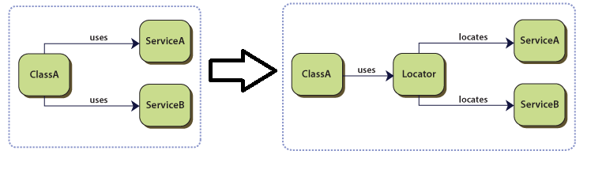
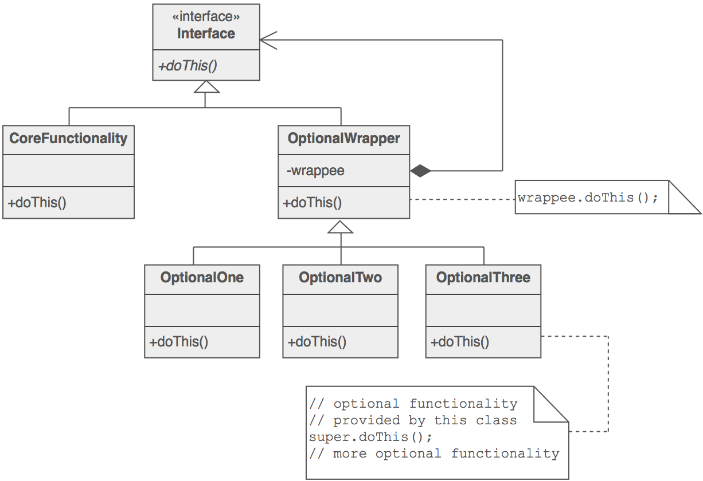
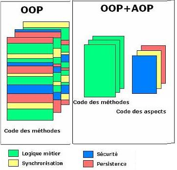
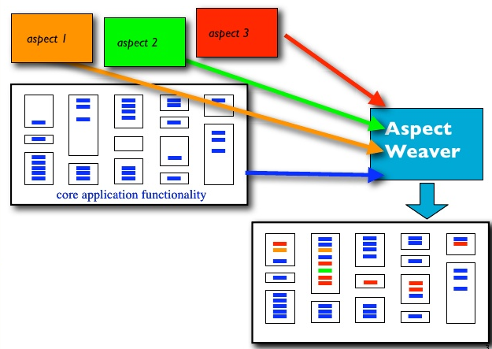

AOP
Aspect Oriented Programming
Présentation par Arnaud Brunet
Questions / Remarques
Questions / Remarques
Il n'y a pas de questions bêtes

Questions / Remarques
Il n'y a pas de honte à ne pas savoir

Questions / Remarques
Je peux me tromper

Pourquoi l'AOP ?
ou les limites de l'OOP
Les torchons et les serviettes

Exemple de code WithdrawService
(Service Locator)

IoC, Dependency Injection
Design Patterns à la rescousse
{kind=link}
Valérie Damidot

Le mandataire

L' A O P
L' A O P

AOP = aspects + weaver
Aspect = pointcuts + advises

Pointcuts
initialisation, construction d'un objet
appel à une méthode
lecture / écriture d'un attribut
etc.
Pointcuts
à l'intérieure d'une méthode
filtre sur le nom, les interfaces, les annotations, ...
Pointcuts
@Pointcut("within(@logging.Loggable *)")
public void myClass() {}
@Pointcut("logging.LoggingAspect.myClass() && execution(* *(..)) \
&& !execution(@logging.DontLogIt * *.*(..))")
public void myMethod() {}
Advices
avant, après, autour d'un pointcut
accès aux infos sur le pointcut
interrompre l'execution
Advices
@Around("tracePointCut()")
public Object around(ProceedingJoinPoint joinPoint) {
String methodName = joinPoint.getSignature().getName();
System.out.println("-> " + methodName);
Object result = joinPoint.proceed();
System.out.println("<- " + methodName);
return result;
}
AOP = aspects + weaver
Weaver

Weaver
compile vs runtime
modif du bytecode : aspectj, cglib, javassit
Implémentations
non spécifique à Java
AspectJ, Spring AOP, Guice, serveurs JEE
Spring AOP
annotations AspectJ ou xml
mais Proxy si interface
sinon bytecode avec cglib
ou aspectj
Exemples
On l'utilise ?
vous l'utilisez déjà peut-être (voir surement)
code transverse
code plus technique
On ne l'utilise pas ?
trop d'aspect, tue l'aspect
complexité trop grande
code non linéaire
méconnaissances du déroulement de l'application